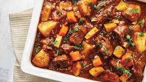

Beef Stew

Ingredients
- 2 T flour
- sea salt and freshly ground black pepper, to taste
- 500 g free-range beef cubes
- 2 T oil
- 2 onions, roughly chopped
- 4 carrots, peeled and roughly chopped
- 2 celery sticks, roughly chopped
- 1 T tomato paste
- 1/2 cup red wine
- 2 cups beef stock
- mashed potatoes or steamed rice, for serving
- 2 bay leaves
- 3 thyme sprigs
Steps
- Mix the flour with some seasoning, then lightly coat the beef cubes in the seasoned flour.
- Heat the oil in a pan and fry the beef until golden brown, then remove from the pan.
- In the same pan fry the onions, carrots, celery, bay leaves and thyme for 5–10 minutes until slightly caramelised. Add the tomato paste and the red wine, then cook for 5 minutes.
- Return the beef to the pan, add the beef stock and simmer for 2–3 hours, or until tender. Season and serve with mashed potatoes or steamed rice.